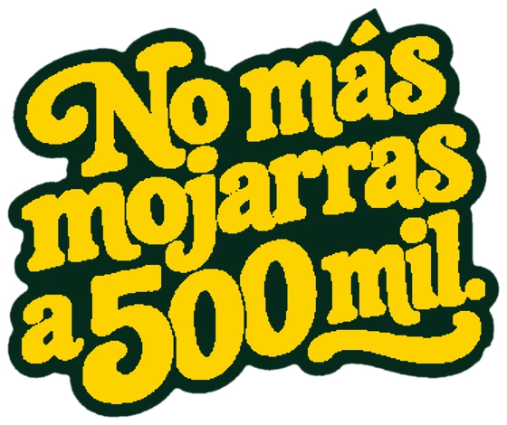
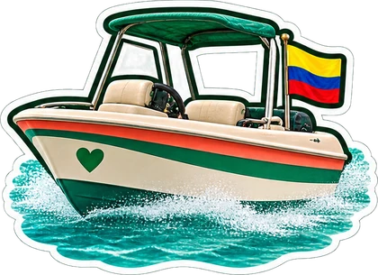
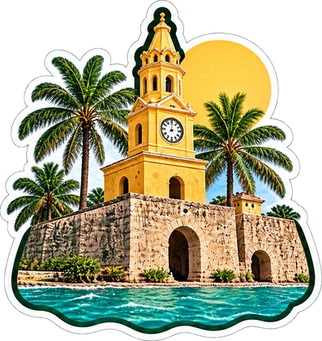
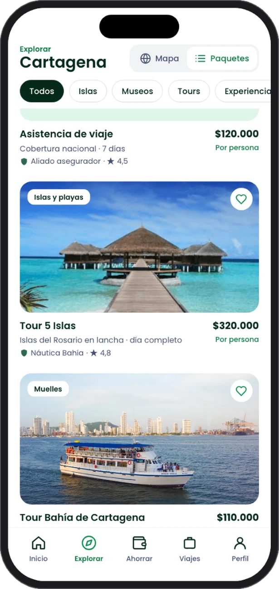
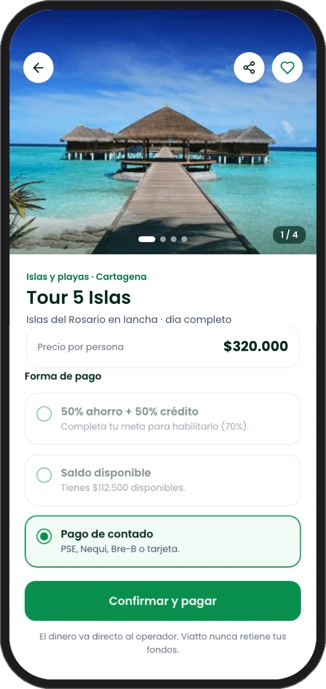
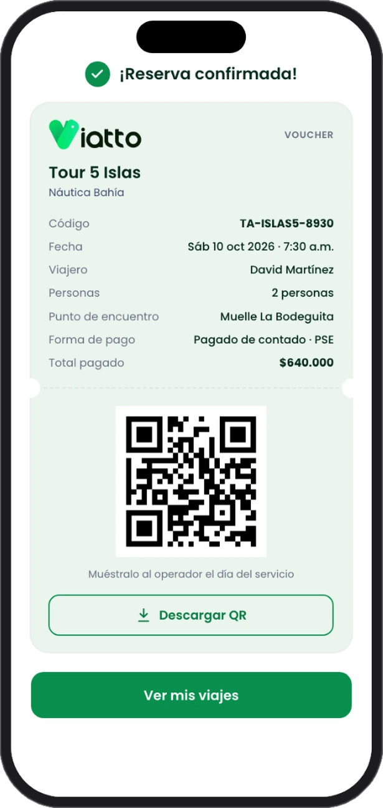

Viatto Pay
es otro viaje
Viatto es la app para ahorrar tu viaje a Cartagena, financiar lo que falta y reservar con el precio claro.
Quiero la app Muy pronto. Déjanos tu correo y te avisamos.¿Tours con el precio a la vista? ¿Y yo de qué vivo?


Así funciona
El Viaje
- 1Descarga la appBaja Viatto en tu celular.
- 2RegístrateCrea tu cuenta con tu correo, Google o Apple.
- 3Explora los toursIslas, tours y museos con el precio y lo que incluyen a la vista.
- 4PagaDe contado o con el plan 50 % ahorro más cuotas.
- 5Muestra tu QRTu voucher queda en la app. Lo muestras al operador el día del tour y listo.





50%
tú
lo ahorras a tu ritmo

50%
Viatto
te lo pone en cuotas
= tu viaje completoCartagena
¿Cómo se paga tu viaje? Crédito sujeto a aprobación.
Cartagena te espera.
Regístrate y gana 5.0005K millas.
Déjanos tus datos y te avisamos apenas abramos la app. Tus millas te estarán esperando.
5KÚsalas dentro de la app en tu primera experiencia Viatto.